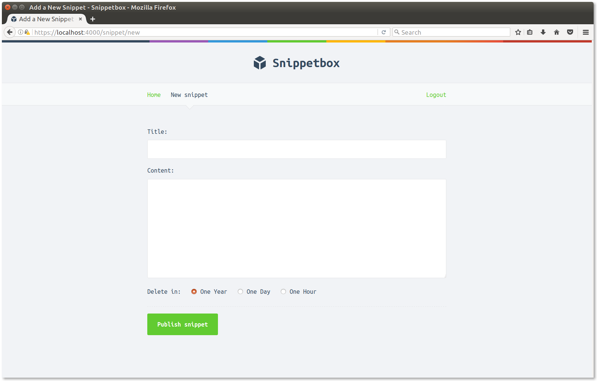

1. Introduction
In this book we'll be building a web application called Snippetbox, which lets people paste and share snippets of text – a bit like Pastebin or Github's Gists. Towards the end of the build it will look a bit like this:

Our application will start off super-simple, with just one web page. Then with each chapter we'll build it up step-by-step until a user is able save their own text snippets and view other people's via the app. This will take us through topics like how to structure a project, routing requests, working with a database, processing forms and displaying dynamic data safely.
Then later in the book we'll add user accounts, and restrict the application so that only registered users can save text snippets. This will take us through more advanced topics like configuring a HTTPS server, session management, user authentication and middleware.
Prerequisites
This book is designed for people who are new to Go, but you'll probably find it more enjoyable to read if you have a general understanding of the language syntax first. If you find yourself struggling with the syntax, the Little Book of Go by Karl Seguin is a fantastic tutorial, or if you want something more interactive I recommend running through the Tour of Go.
I've also assumed that you've got a (very) basic understanding of HTML/CSS and SQL, and some familiarity with working at the terminal (or command line for Windows users). If you've built a web application in any other language before – whether it's Ruby, Python, PHP or C# – then this book should be a good fit for you.
In terms of software, you'll need a working installation of Go (version 1.9 or newer).
We'll also use Curl in a few places throughout the book to inspect the responses that our application sends. This should be pre-installed on most Macs, and Linux/Unix users should find in their package repositories as curl. Windows users can download it from here.
Conventions
The code blocks throughout the book are shown with a silver background like below. If the code is particularly long, parts that aren't relevant may be replaced with an ellipsis. To make it easy to follow along, most of the code blocks also have a title bar at the top indicating the name of the file that we're working on.
package main ··· // Indicates that some existing code has been omitted. func sayHello() { fmt.Println("Hello world!") }
In contrast, terminal (command line) instructions are show with a black background and start with a dollar symbol. These commands should work on any Unix-based operating system, including Mac OSX and Linux. Sample output is shown in silver beneath the command.
$ echo "Hello world!"
Hello world!
If you're using Windows, you should replace the command with the DOS equivalent or carry out the action via the normal Windows GUI.
Some chapters in this book end with a notes section, which contains information that isn't relevant to our application build, but is still important (or sometimes, just interesting) to know about. If you're very new to Go, you might want to skip these notes and circle back to them later.
Copyright and Disclaimer
Let's Go: Learn to build professional web applications with Go. Copyright © 2017 Alex Edwards. Last updated 2017-10-11 07:51:56. Version 1.1.1.
Cover artwork from Vecteezy.com.
The information provided within this book is for general informational purposes only. While the author has made every effort to ensure the accuracy of the information within this book was correct at time of publication there are no representations or warranties, express or implied, about the completeness, accuracy, reliability, suitability or availability with respect to the information, products, services, or related graphics contained in this book for any purpose. Any use of this information is at your own risk.